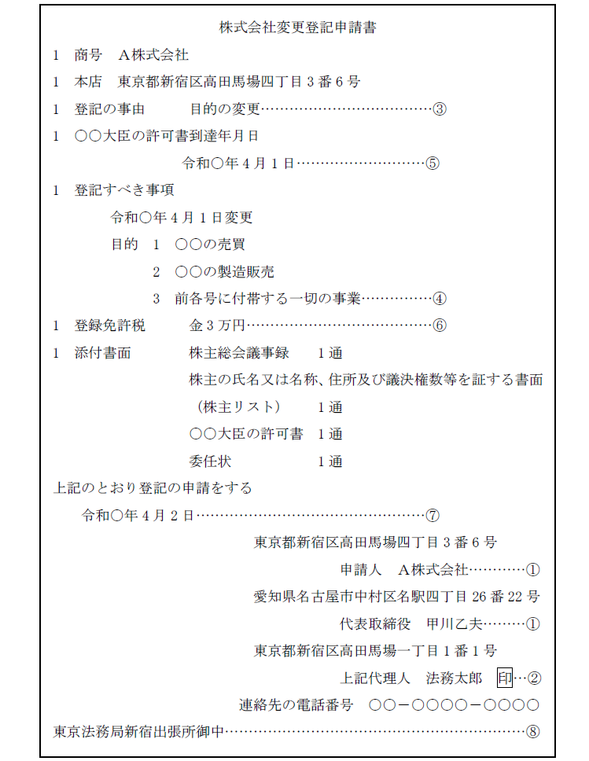
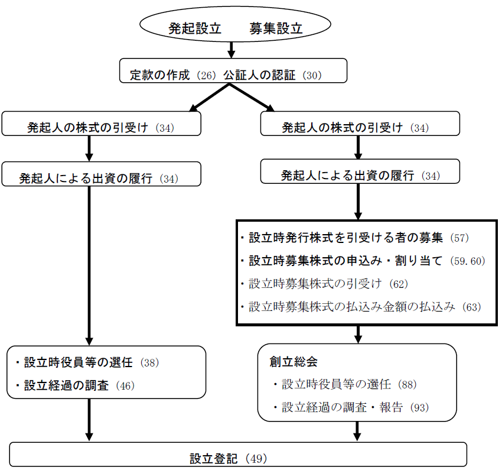

第１編 総説
第１章 「会社」とは？
会社：「営利性」「社団性」「法人性」を備えた営利社団法人
会社とは、会社法の規定に従って設立された、株式会社、合名会社、合資会社又は合同会社をいう。株式会社を除く3社を総称して、持分会社という（575Ⅰ）。
| 意義 | 会社の 所有者 |
経営者 | |
| 株式会社 | 各自が有する株式の引受価格を限度とする有限の間接責任を負うにすぎない社員（株主）のみからなる会社 | 出資者である株主 | 取締役・執行役が会社の経営を担う |
| 合名会社 | 無限責任社員（会社債務につき会社債権者に対し直接連帯し、無限の責任を負担する社員）のみからなる会社 | 出資者である社員が会社の経営を行うため、所有と経営が分離していない。 | |
| 合資会社 | 無限責任社員と有限責任社員（会社債権者に対し出資のうち未履行部分を限度として直接連帯し、責任を負担する社員）からなる会社 ※1 | ||
| 合同会社 | 間接有限責任社員のみからなる会社 ※2 | ||
※1 他の会社と違い、責任の種類が異なる構成員が混在する会社である
※2 会社の構成員の責任は株式会社と同じである
株式：均等に細分化された割合的単位の形をとる株式会社の社員たる地位
法人：自然人以外で権利能力を有するもの
会社は設立の登記によって法人格を有するものであり、会社が取得した権利義務を構成員は取得せず、独立して権利義務の帰属主体となる。
第２章 「商業登記」とは？
商業登記制度とは、会社及び個人商人に関する一定の事項を商業登記簿に記載して公示し、取引が安全かつ円滑に行われるようにする制度である。これにより登記簿に記載される事項を登記事項といい、どのような事項が登記事項であるかは、会社法・商業登記その他の法律によって定められている。
以下の表は、各登記事項をまとめたものである（役員区、役員責任区、企業担保権区その他一部の事項を省略している。商登規別表第5参照）。
| 区の名称 | 記録すべき事項 |
| 商号区 | 商号 |
| 商号譲渡人の債務に関する免責 | |
| 本店の所在場所 | |
| 会社の公告方法 | |
| 貸借対照表に係る情報の提供を受けるために必要な事項 | |
| 会社成立の年月日 | |
| 目的区 | 目的 |
| 株式・資本区 | 単元株式数 |
| 発行可能株式総数 | |
| 発行済株式の総数並びにその種類及び種類ごとの数 | |
| 株券発行会社である旨 | |
| 資本金の額 | |
| 発行する株式の内容 | |
| 発行可能種類株式総数及び発行する各種類の株式の内容 | |
| 株主名簿管理人の氏名又は名称及び住所並びに営業所 | |
| 会社支配人区 | 支配人 |
| 支配人を置いた営業所 | |
| 支店区 | 支店の所在場所 |
| 新株予約権区 | 新株予約権に関する事項 |
| 会社履歴区 | 会社の継続 |
| 合併をした旨並びに吸収合併消滅会社の商号及び本店 | |
| 分割をした旨並びに吸収分割会社の商号及び本店 | |
| 分割をした旨並びに吸収分割承継会社又は新設分割設立会社の商号及び本店 | |
| 会社状態区 | 存続期間の定め |
| 解散の事由の定め | |
| 取締役会設置会社である旨 | |
| 会計参与設置会社である旨 | |
| 監査役設置会社である旨 | |
| 監査役会設置会社である旨 | |
| 特別取締役による議決の定めがある旨 | |
| 監査等委員会設置会社である旨 | |
| 指名委員会等設置会社である旨 | |
| 会計監査人設置会社である旨 | |
| 清算人会設置会社である旨 | |
| 解散（登記記録区に記録すべき事項を除く。） | |
| 登記記録区 | 登記記録を起こした事由及び年月日 |
| 登記記録を閉鎖した事由及び年月日 | |
| 登記記録を復活した事由及び年月日 |
会社の登記は、その会社を代表する者が、会社を代表して申請する（昭39.3.28民甲837）。
登記期間：登記すべき事項が生じた場合に登記の申請をしなければならない期間（会社法により法定されていることが多い。会社法911条、915条）
登記期間を徒過した場合であっても登記申請自体は受理されるが、期間を徒過したについて故意又は過失があるときには、会社の代表者は過料に処される（会社法976条1号）。
登記の申請は、書面でするのが原則とされている（書面主義。商登法17条1項）。 オンライン申請及び特例方式による申請もすることができる。
【申請書の見本】

①申請人の氏名及び住所、申請人が会社であるときは、その商号及び本店並びに代表者の氏名又は名称及び住所（当該代表者が法人である場合にあっては、その職務を行うべき者の氏名及び住所を含む。）
②代理人によって申請するときは、その氏名及び住所
③登記の事由
④登記すべき事項
（注）登記事項が多い場合には、正確かつ迅速な登記手続の実現のために、ＣＤ－Ｒ又はＤＶＤを利用する。
⑤登記すべき事項につき官庁の許可を要するときは、許可書の到達した年月日
⑥登録免許税の額及びこれにつき課税標準の金額があるときは、その金額
⑦申請年月日
⑧登記所の表示
申請書には、上記の事項を記載し、申請人又はその代表者（当該代表者が法人である場合にあっては、その職務を行うべき者）若しくは代理人が記名押印しなければならない。
第２編 株式会社
第１章 設立
設立とは、会社を作ることをいう。株式会社の設立手続は発起人（設立後に株主となる者）という1名から数名の者によって行われる。
株式会社の設立方法（25条1項）
| 発起設立 | 発起人が設立時発行株式の全部を引き受ける方法 |
| 募集設立 | 発起人が設立時発行株式を引き受けるほか、設立時発行株式を引き受ける者の募集をする方法 |
【発起設立・募集設立の手続きの流れ】

発起人：定款に発起人として署名又は記名押印（会社法26条1項）した者
発起人の資格
| 未成年者・成年被後見人・被保佐人 | ○ |
| 法人（非営利目的の法人も含む） | ○ |
| 外国人 | ○ |
発起人が複数存在するときは、発起人は、設立手続に入る前に株式会社の設立を目的とする組合契約（民法667条以下）を締結し、その履行として定款の作成、株式の引受けその他設立に関する行為をする。これにより生じた組合を発起人組合と呼ぶ。
発起設立であっても、募集設立であっても、各発起人は、設立時発行株式を1株以上引き受けなければならない（会社法25条2項）。引受けの方法は規定されていないため、口頭によることもできる。引受けの時期は、定款作成と同時である必要はなく、その前でも後でもよい。
発起人は定款を作成し、これに発起人全員が署名し、又は記名押印しなければならない（会社法26条1項）。なお、電磁的記録の作成の方法によることもできる（会社法26条2項）。
1. 公証人の認証
(1) 意義
定款は、公証人の認証を受けなければ効力を生じない（会社法30条1項）。公証人の認証は、定款の内容を明確にして、紛争及び不正行為を防止するため要求される（法令違反がないか等を公証人がチェックする）。
設立しようとする株式会社の本店所在地を管轄する法務局又は地方法務局に所属する公証人が認証する必要がある（公証人法62条の2）。公証人にも管轄があるわけである（公証人法17条）。
(2) 原始定款の変更
公証人の認証を受けた定款は、株式会社の成立前は、次に掲げる場合を除き、変更できない（会社法30条2項）。
| 発起設立・募集設立共通 | ①変態設立事項について裁判所の変更決定があった場合（会社法33条7項） |
| ②上記①の決定があり、①の裁判の確定後1週間以内に発起人全員の同意によりその定めを廃止するとき（会社法33条9項） | |
| ③発行可能株式総数の定めの設定・変更（会社法37条1項、2項） | |
| 募集設立※ | ④創立総会の決議による変更（会社法96条） |
※ 設立時募集株式に係る払込期日又は払込期間の初日のうち最も早い日以後は、左記②及び③の場合を含めて、発起人が定款変更することは認められない（会社法95条）。この場合は、創立総会において、定款変更をすべきである。
2. 定款の記載内容
(1) 絶対的記載事項
：定款に必ず記載・記録しなければならない事項（会社法27条、37条1項）
絶対的記載事項を欠くときは定款全体が無効となる。絶対的記載事項の具体的内容は次のとおりである。
| 定款の絶対的記載事項 | 登記事項 |
| ①目的 | ○ |
| ②商号 | ○ |
| ③本店の所在地（最小行政区画） | ○ |
| ④設立に際して出資される財産の価格又はその最低額 | × |
| ⑤発起人の氏名又は名称及び住所（※） | × |
※ 発起人の住所は日本国内にあることを要しない。
①目的
株式会社の目的である事業のことである。法人は目的の範囲内において、権利を有し、義務を負う（民法34条）。
②商号
会社はその名称を商号とする（会社法6条1項）。株式会社である場合、商号中に株式会社の文字を用いなければならない（会社法6条2項）。
③本店の所在地
本店が所在する独立の最小行政区画（市町村。東京都における区）で足りる。株式会社の本店の所在地は、日本国内である必要がある。本店の所在地は、民事裁判の管轄が生じるからである。
ex. 「当会社の本店は、東京都港区に置く。」
④設立に際して出資される財産の価額又はその最低額
※資本金の額は定款の絶対的記載事項ではない。
⑤発起人の氏名又は名称及び住所
⑥発行可能株式総数
※⑥は、原始定款に記載・記録していなかった場合は、株式会社の成立の時までに定めなければならない（会社法37条）。原始定款の作成時点では株式の発行数が決まっていない場合もあるため、⑥の発行可能株式総数は原始定款に記載・記録する必要はない。
(2) 相対的記載事項
：定款に記載・記録しなくても定款自体の効力には影響がないが、定款に
記載・記録しないとその事項の効力が認められない事項（会社法29条）
ex1. 変態設立事項（会社法28条各号）
ex2. 機関の定め（「当会社は、取締役会を置く。」等）
ex3. 存続期間の定め
(3) 任意的記載事項
：定款に記載・記録しなくても定款自体の効力には影響がなく、かつ、定款に記載・記録しない場合においても、定款外において定めれば拘束力を有する事項（会社法29条）
ex. 定時株主総会招集の時期、株主総会の議長、取締役や監査役の員数、決算期
定款に記載・記録すれば明確になり、定款変更の手続（株主総会の特別決議。会社法466条、309条2項11号）によらなければ変更できなくなるという利点がある。
3. 定款の備置き及び閲覧等
定款は、備え置かなければならず、次のような場合に株主等の閲覧・謄写請求が認められている（会社法31条）。株主等は、定款に記載された事項を前提に出資を行ったり、債権を取得したりするからである。
| 会社成立前 | 会社成立後 | |
| 備置場所 | 発起人が定めた場所 | 本店及び支店 ※ |
| 閲覧請求権者 | 発起人及び設立時募集株式の引受人 | ①株主②債権者③親会社社員 |
| 時間・理由 | 発起人が定めた時間内はいつでも（会社法31条2項、102条1項） | ①②：営業時間内はいつでも ③：権利行使のために必要があるとき＋裁判所の許可を得た場合 |
※ 定款が電磁的記録で作成されている場合であって、インターネットその他の電気通信回線を通じて、支店においても閲覧等の請求に応じることができる措置が採られていれば、本店に備え置くことで足りる（会社法31条4項、会社施行規227条1号）。